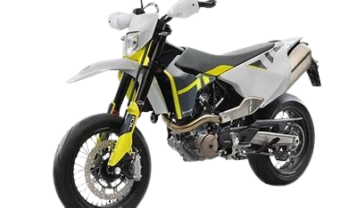
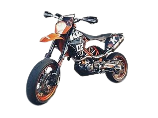
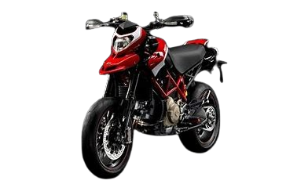
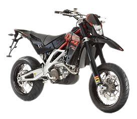

Moto
esse site dara algumas informações sobre supermotos
Aqui estão algus exemplos
Husqvarna 701 Supermoto

Motor: A Husqvarna 701 Supermoto é equipada com um motor monocilíndrico de 690 cc, refrigerado a líquido, que produz 73 cv de potência máxima.
Design e Estilo: Seu design minimalista e elegante a torna uma opção atraente para os entusiastas de supermotos. O assento alto (890 mm) proporciona uma posição de pilotagem ereta e excelente visibilidade.
Peso e Agilidade: Com apenas 135 kg, a 701 Supermoto é ágil e fácil de manobrar em tráfego urbano e curvas sinuosas.
KTM 690 SMC R

Motor: A KTM 690 SMC R também possui um motor monocilíndrico de 690 cc, refrigerado a líquido, com 72 cv de potência máxima.
Desempenho Off-Road: Esta supermoto é conhecida por sua versatilidade. Ela oferece suspensões ajustáveis e pneus adequados para aventuras off-road, além de ser uma ótima escolha para uso diário.
Estilo Agressivo: O design agressivo da KTM 690 SMC R atrai pilotos que buscam uma experiência emocionante nas estradas.
Ducati Hypermotard 1100 EVO SP

Motor: A Ducati Hypermotard 1100 EVO SP é alimentada por um motor desmodrômico de 1078 cc, gerando 95 cv de potência máxima.
Estilo Italiano: Com seu estilo italiano marcante, a Hypermotard combina elegância com desempenho. A posição de pilotagem ereta e o peso de 171 kg a tornam adequada para viagens mais longas.
Aprilia SXV550

Motor: A Aprilia SXV550 possui um motor V-twin de 549 cc, refrigerado a líquido, com 70 cv de potência máxima.
Desempenho Esportivo: Projetada para corridas, a SXV550 oferece uma experiência de pilotagem emocionante. Seu baixo peso (120 kg) e suspensões de alta qualidade garantem agilidade e controle.